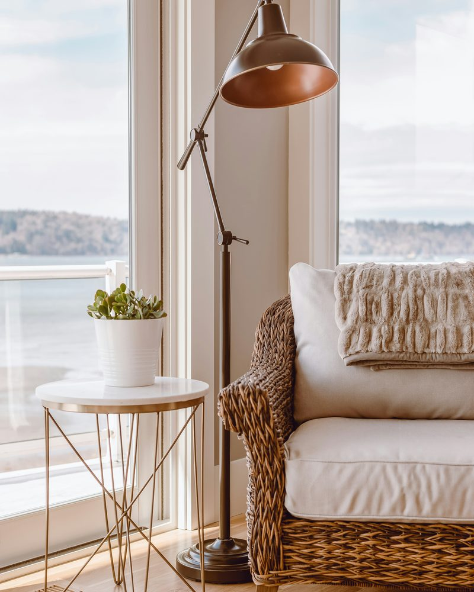

Povratak sebi i život u skladu sa svojom unutarnjom istinom.
Dogovori uvodni razgovorU Samadhi možeš doći s konkretnom životnom temom koju želiš bolje razumjeti i početi živjeti drugačije:

Partnerski i obiteljski odnosi

Granice i odnosi s drugima

Osjećaji, unutarnji obrasci i odnos prema sebi

Važne odluke, promjene i životna raskrižja

Zdravlje, odnos prema tijelu i energiji

Posao, karijera, novac i ostvarenje
Izvana funkcioniraš, ali iznutra osjećaš napetost, umor ili udaljenost od sebe. Teško postavljaš granice, odnosi te iscrpljuju ili se nalaziš pred važnom promjenom i ne znaš kako dalje.
Iza tih obrazaca često stoje uvjerenja poput:
„Ne vrijedim dovoljno.“
„Sa mnom nešto nije u redu.“
„Moram zaslužiti ljubav.“
„Moje potrebe nisu važne.“
„Nemam pravo razočarati druge.“
„Izgubit ću ljubav ako postavim granicu.“
„Ne mogu vjerovati sebi.“
Samadhi je individualni iskustveni proces u kojem radimo na konkretnoj situaciji koja ti otežava život. Otkrivamo što te u njoj zadržava i postupno gradimo kapacitet da ostaneš uz sebe, jasnije osjetiš što ti je potrebno i postupiš u skladu sa svojom unutarnjom istinom.
Na početku procesa zajedno otkrivamo što te najviše opterećuje, koji se obrazac ponavlja i što želiš promijeniti. Zatim istražujemo što ga održava i gradimo sposobnost da u stvarnim situacijama počneš birati drugačije.
Tijekom rada:
prepoznajemo što se u tebi aktivira u konkretnim situacijama
učimo slušati signale tijela i imenovati ono što osjećaš
razlikujemo tvoje potrebe od straha, krivnje i tuđih očekivanja
istražujemo obiteljske i sistemske obrasce koji utječu na tvoje odnose i odluke
gradimo sposobnost da ostaneš uz sebe i kada je neugodno
spoznaje prenosimo u konkretne razgovore, granice, izbore i postupke
Cilj procesa je da jasnije osjetiš što ti pripada, što ti je potrebno i kako želiš postupiti — te da postupno stekneš kapacitet to i živjeti.

Svaki susret počinje razgovorom o tome gdje si sada, što se događalo od prethodnog dolaska i što u tom trenutku traži tvoju pažnju.
Za svaki susret rezervirana su puna dva sata upravo zato da rad ne moramo požurivati ili prekidati u trenutku kada smo došli do nečega važnog.
Nakon toga radimo na način koji najbolje odgovara tebi i temi koja je prisutna. Susret može uključivati:


Ne prolazimo svaki put kroz sve navedeno. Ponekad je najvažniji razgovor. Ponekad tijelo pokaže ono do čega riječima još ne možemo doći. Nekada određeni odnos ili unutarnji sukob traži konstelacijski rad, a nekada su dah, pokret ili tišina ono što ti omogućuje da ostaneš uz sebe.
U svakom trenutku imaš pravo usporiti, zastati, postaviti pitanje ili odbiti dio procesa koji ti ne odgovara.
Na kraju susreta ostavljamo vrijeme za povezivanje svega što se otvorilo. Ne odlaziš usred intenzivnog procesa, već sa što više jasnoće o tome što si prepoznala i na što ćeš obratiti pažnju do sljedećeg dolaska.
Jedan susret može donijeti važan uvid, ali obrazac koji se gradio godinama rijetko se mijenja kroz jedno iskustvo. Potrebno je vrijeme da izgradimo povjerenje, upoznamo način na koji tvoje tijelo reagira i prepoznamo što se nalazi ispod problema s kojim dolaziš. Zatim je potrebno ono što otkriješ početi primjenjivati u stvarnim situacijama.
Između susreta promatraš što se mijenja u tvojim odnosima, reakcijama i odlukama. Ono što se dogodi u životu postaje materijal za sljedeći susret. Tako se rad ne zaustavlja na razumijevanju, već se postupno prenosi u svakodnevicu.
Deset susreta čini temeljni Samadhi proces. Taj okvir ne obećava da će svaka životna tema biti završena, ali omogućuje dovoljno vremena i kontinuiteta za stvaran i vidljiv pomak.
Nakon desetog susreta zajedno sagledavamo proces. Dalje možeš nastaviti samostalno, povremeno dolaziti na individualne susrete ili dogovoriti nastavak rada.
Dobit ćeš vrijeme, prostor i moju potpunu prisutnost posvećenu svemu što proživljavaš. Pratim tvoju priču, tijelo i ritam te prilagođavam rad onome što ti je u tom trenu potrebno.
Postavljat ću ti pitanja, pomoći ti povezati ono što osjećaš s obrascima koje živiš i ponuditi iskustveni rad kada procijenim da ti može pomoći. Reći ću ti što primjećujem, a tvoje iskustvo i unutarnji odgovor ostaju najvažniji kriterij procesa.
Moj rad temelji se na povjerenju, povjerljivosti, poštovanju osobnih granica i slobodi izbora. U svakom trenutku imaš pravo usporiti, zastati, postaviti pitanje ili odbiti dio procesa koji ti ne odgovara.
Promjena za svakoga izgleda drugačije. U procesu možeš razviti sposobnost da:
Promjena se često prvo vidi u malim trenucima – u razgovoru koji više ne izbjegneš, granici koju izgovoriš, odluci koju napokon doneseš ili trenutku u kojem primijetiš stari obrazac i odabereš drugačije.
Kratki online razgovor od 20 minuta u kojem upoznajemo tvoju temu, odgovaramo na pitanja i provjeravamo odgovara li ti Samadhi i moj način rada.
Uvodni razgovor nije Samadhi susret i ne uključuje duboki osobni rad.
Detaljnije upoznajemo tvoju životnu situaciju, temu s kojom dolaziš i ono što želiš promijeniti. Promatramo kako se ona odražava na tvoje misli, osjećaje, tijelo, odnose i postupke.
Nastavljamo kroz ciklus od deset povezanih susreta, u dogovorenom ritmu.
Broj mjesta je ograničen. Uplata potvrđuje ulazak u proces i rezervaciju termina.
Samadhi se u početnom ciklusu ne rezervira kao pojedinačni susret. Nakon završenih deset dolazaka individualni Samadhi susreti mogu se dogovarati prema potrebi.
Ne. Sve vježbe prilagođavamo tvojem tijelu, mogućnostima i trenutačnom stanju.
Svaki susret oblikuje se prema temi koja je prisutna. Koristimo samo ono što ti u tom trenutku može pomoći. Neki će susreti biti više razgovorni, a drugi izraženije iskustveni.
Ne. Početni Samadhi proces odvija se kao ciklus od deset susreta jer je kontinuitet važan dio rada. Tek nakon završenog ciklusa pojedinačni susreti mogu se rezervirati prema potrebi kao nastavak rada.
Ne. Samadhi se odvija uživo u Zagrebu jer tijelo, pokret, prostor i neposredna prisutnost čine važan dio procesa.
Preporučeni ritam je jednom tjedno ili svakih sedam do deset dana. Termine možemo dogovarati unaprijed, a ne moraju nužno biti uvijek istog dana i u isto vrijeme.
Uvodni razgovor ne obvezuje te na ulazak u proces. Služi tome da otvoreno razgovaramo o onome što ti je potrebno i provjerimo može li ti Samadhi u tome pomoći. Ako procijenimo da je ovo pravi proces za tebe, dogovorit ćemo prvi susret i ritam dolazaka.
Dogovori uvodni razgovor